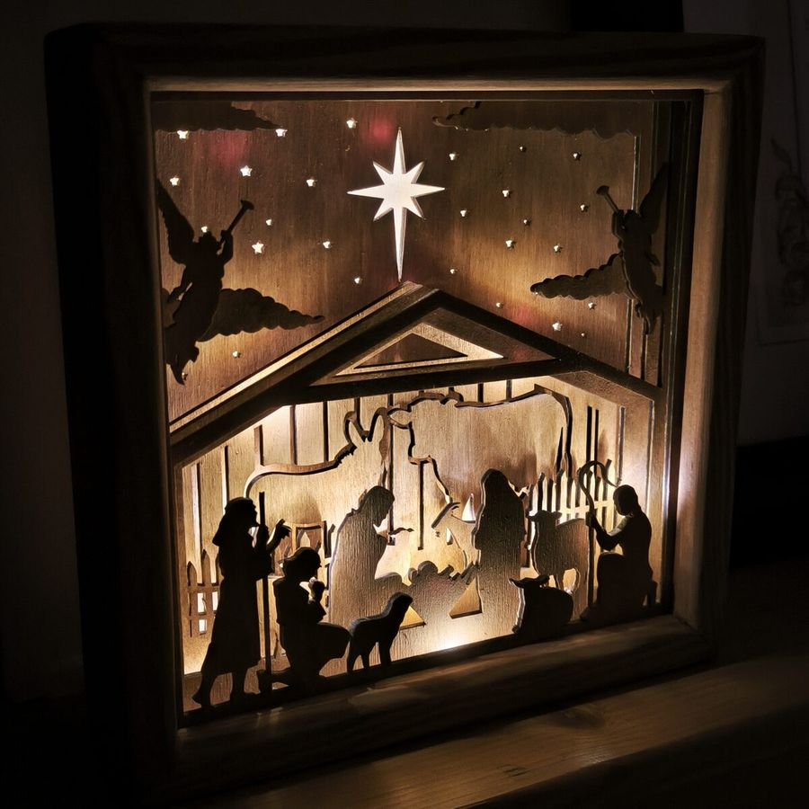
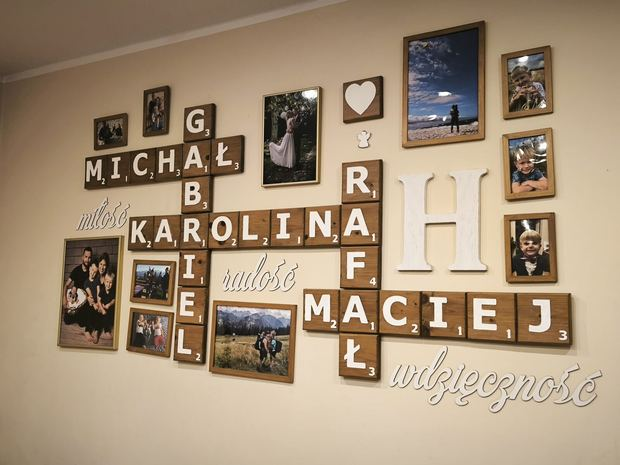

Rozmowa i projekt
Mówisz, co ma powstać i gdzie ma wisieć. Ustalamy wymiar, treść napisu i termin. Przy trudniejszych rzeczach dostajesz wstępny rysunek.
Studio Sygnatura to mała pracownia w Poznaniu. Nie robimy dużo — robimy tak długo, aż detal zacznie się bronić. Poniżej to, co faktycznie siedzi w naszych rzeczach.

Mówisz, co ma powstać i gdzie ma wisieć. Ustalamy wymiar, treść napisu i termin. Przy trudniejszych rzeczach dostajesz wstępny rysunek.
Dostajesz cenę i termin na piśmie. Po przedpłacie wchodzisz do kolejki pracowni — wtedy zaczynamy cięcie i szlif.
Odbiór osobisty w Poznaniu po ustaleniu terminu albo wysyłka w całej Polsce. Do paczki dołączamy informację o pielęgnacji drewna.
Robimy rzeczy z drewna: warstwowe obrazy z podświetleniem, szyldy i napisy, numerację, prezenty z grawerem, dekoracje stołu i ściany. Nie prowadzimy sklepu z gotową kolekcją — każda rzecz powstaje pod zamówienie.
Pracujemy w Poznaniu i okolicach; wybrane rzeczy wysyłamy w całej Polsce. Odbiór osobisty i spotkanie wyłącznie po wcześniejszym uzgodnieniu.
